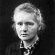

Notable Scientists
Maria Skłodowska-Curie

- Profession: physicist and chemist
- Awards: 4 (Nobel Prize in Physics, Nobel Prize in Chemistry, Davy Medal, Matteucci Medal)
- Discovered: polonium (chemical element)
Katsuko Saruhashi
- Profession: geochemist
- Awards: 2 (Miyake Prize for geochemistry, Tanaka Prize)
- Discovered: a method for measuring carbon dioxide in seawater